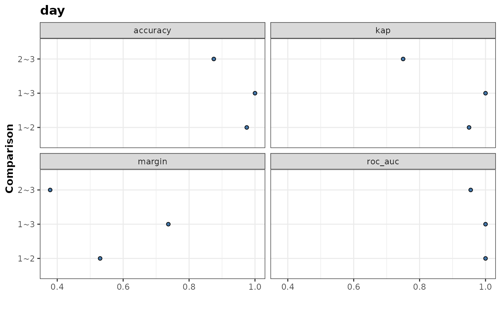
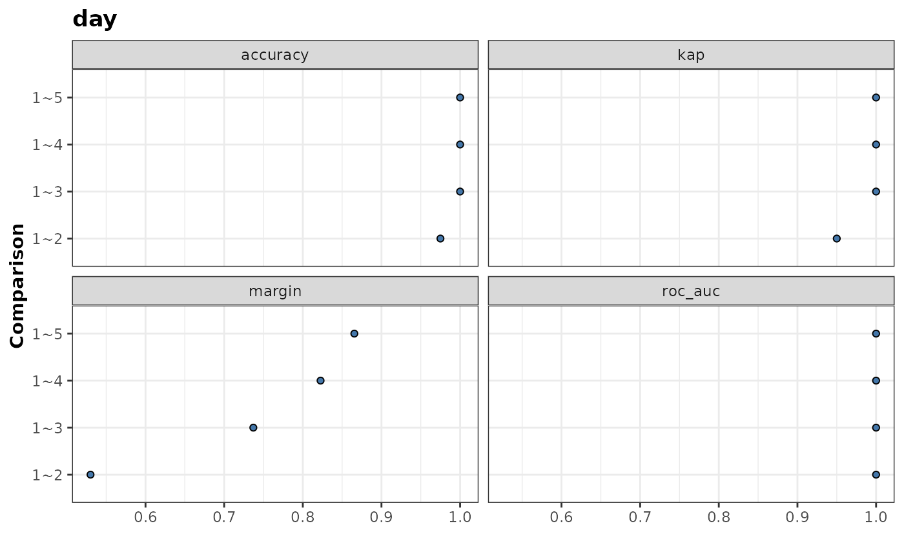
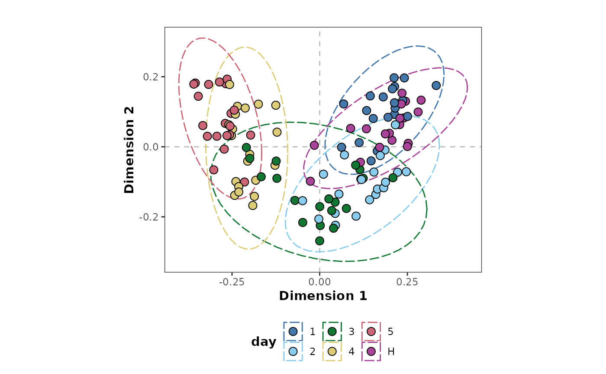
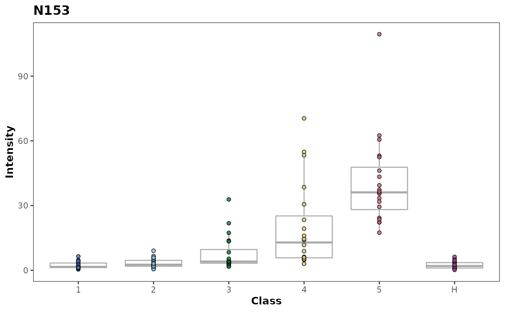

vignettes/modelling.Rmd
modelling.Rmdlibrary(metabolyseR) #> #> Attaching package: 'metabolyseR' #> The following object is masked from 'package:stats': #> #> anova #> The following objects are masked from 'package:base': #> #> raw, split
Modelling provides the essential data mining step for extracting biological information from a data set relating to experimental conditions. metabolyseR provides a number of both univariate and multivariate methods for data mining.
For an introduction to the usage of metabolyseR for both exploratory and routine analyses, see the introduction vignette using:
vignette('introduction','metabolyseR')
To further supplement this document, a quick start example analysis is also available as a vignette:
vignette('quick_start','metabolyseR')
To begin, the package can be loaded using:
The examples used here will use the abr1 data set from the metaboData package. This is nominal mass flow-injection mass spectrometry (FI-MS) fingerprinting data from a plant-pathogen infection time course experiment. The pipe %>% from the magrittr package will also be used. The example data can be loaded using:
Only the negative acquisition mode data (abr1$neg) will be used along with the sample meta-information (abr1$fact). Create an AnalysisData class object, assigned to the variable d, using the following:
d <- analysisData(abr1$neg[,1:500],abr1$fact)
print(d) #> #> AnalysisData object containing: #> #> Samples: 120 #> Features: 500 #> Info: 9
As can be seen above the data set contains a total of 120 samples and 500 features.
classification_rf <- d %>% randomForest(cls = 'day',nCores = 2)
classification_rf %>% metrics() #> # A tibble: 4 x 5 #> Response Comparison .metric .estimator .estimate #> <chr> <chr> <chr> <chr> <dbl> #> 1 day 1~2~3~4~5~H accuracy multiclass 0.775 #> 2 day 1~2~3~4~5~H kap multiclass 0.73 #> 3 day 1~2~3~4~5~H roc_auc hand_till 0.960 #> 4 day 1~2~3~4~5~H margin <NA> 0.142
classification_rf %>% importance() #> # A tibble: 5,000 x 5 #> Response Comparison Feature Metric Value #> <chr> <chr> <chr> <chr> <dbl> #> 1 day 1~2~3~4~5~H N1 1 0 #> 2 day 1~2~3~4~5~H N1 2 0 #> 3 day 1~2~3~4~5~H N1 3 0 #> 4 day 1~2~3~4~5~H N1 4 0 #> 5 day 1~2~3~4~5~H N1 5 0 #> 6 day 1~2~3~4~5~H N1 FalsePositiveRate 0.559 #> 7 day 1~2~3~4~5~H N1 H 0 #> 8 day 1~2~3~4~5~H N1 MeanDecreaseAccuracy 0 #> 9 day 1~2~3~4~5~H N1 MeanDecreaseGini 0 #> 10 day 1~2~3~4~5~H N1 SelectionFrequency 0 #> # … with 4,990 more rows
importanceMetrics(classification_rf) #> [1] "1" "2" "3" #> [4] "4" "5" "FalsePositiveRate" #> [7] "H" "MeanDecreaseAccuracy" "MeanDecreaseGini" #> [10] "SelectionFrequency"
classification_rf %>% explanatoryFeatures(metric = 'MeanDecreaseGini',threshold = 0.1) #> # A tibble: 258 x 5 #> Response Comparison Feature Metric Value #> <chr> <chr> <chr> <chr> <dbl> #> 1 day 1~2~3~4~5~H N111 MeanDecreaseGini 0.140 #> 2 day 1~2~3~4~5~H N113 MeanDecreaseGini 0.617 #> 3 day 1~2~3~4~5~H N115 MeanDecreaseGini 1.23 #> 4 day 1~2~3~4~5~H N117 MeanDecreaseGini 0.635 #> 5 day 1~2~3~4~5~H N119 MeanDecreaseGini 0.976 #> 6 day 1~2~3~4~5~H N127 MeanDecreaseGini 0.131 #> 7 day 1~2~3~4~5~H N129 MeanDecreaseGini 0.162 #> 8 day 1~2~3~4~5~H N130 MeanDecreaseGini 0.315 #> 9 day 1~2~3~4~5~H N131 MeanDecreaseGini 1.04 #> 10 day 1~2~3~4~5~H N132 MeanDecreaseGini 0.792 #> # … with 248 more rows
d %>% randomForest(cls = c('name','day'),nCores = 2) %>% metrics() #> Warning: Classes with < 5 replicates removed: "11_3", "11_4", "11_5", "11_6", #> "11_H", "12_1", "12_3", "12_6", "12_H", "13_1", "13_2", "13_3", "13_5", "13_6", #> "13_H", "14_2", "14_3", "14_5", "14_6", "14_H", "15_1", "15_2", "15_4", "15_5", #> "15_6", "15_H" #> Unbalanced classes detected. Stratifying sample size to the smallest class size. #> # A tibble: 8 x 5 #> Response Comparison .metric .estimator .estimate #> <chr> <chr> <chr> <chr> <dbl> #> 1 name 11_2~12_2~12_4~13_4~14_4~15_3 accuracy multiclass 0.325 #> 2 name 11_2~12_2~12_4~13_4~14_4~15_3 kap multiclass 0.186 #> 3 name 11_2~12_2~12_4~13_4~14_4~15_3 roc_auc hand_till 0.757 #> 4 name 11_2~12_2~12_4~13_4~14_4~15_3 margin <NA> -0.0499 #> 5 day 1~2~3~4~5~H accuracy multiclass 0.775 #> 6 day 1~2~3~4~5~H kap multiclass 0.73 #> 7 day 1~2~3~4~5~H roc_auc hand_till 0.960 #> 8 day 1~2~3~4~5~H margin <NA> 0.142
d %>% randomForest(cls = 'day',comparisons = list(day = '1~2~3'),nCores = 2) %>% metrics() #> # A tibble: 4 x 5 #> Response Comparison .metric .estimator .estimate #> <chr> <chr> <chr> <chr> <dbl> #> 1 day 1~2~3 accuracy multiclass 0.917 #> 2 day 1~2~3 kap multiclass 0.875 #> 3 day 1~2~3 roc_auc hand_till 0.974 #> 4 day 1~2~3 margin <NA> 0.338
d %>% keepClasses(cls = 'day',classes = c('1','2','3')) %>% randomForest(cls = 'day',binary = TRUE) %>% plotMetrics() #> New names: #> * `2` -> `2...1` #> * `1` -> `1...2` #> * `2` -> `2...3` #> * `1` -> `1...4` #> * `2` -> `2...5` #> * ...

binaryComparisons(d,cls = 'day') #> [1] "1~2" "1~3" "1~4" "1~5" "1~H" "2~3" "2~4" "2~5" "2~H" "3~4" "3~5" "3~H" #> [13] "4~5" "4~H" "5~H"
d %>% randomForest(cls = 'day', comparisons = list(day = binaryComparisons(d,cls = 'day')[1:4])) %>% plotMetrics() #> New names: #> * `2` -> `2...1` #> * `1` -> `1...2` #> * `2` -> `2...3` #> * `1` -> `1...4` #> * `2` -> `2...5` #> * ...

unsupervised_rf <- d %>% randomForest(cls = NULL)
plotMDS(unsupervised_rf,cls = 'day')

importance(unsupervised_rf) #> # A tibble: 3,000 x 3 #> Feature Metric Value #> <chr> <chr> <dbl> #> 1 N1 1 0 #> 2 N1 2 0 #> 3 N1 FalsePositiveRate 0.0238 #> 4 N1 MeanDecreaseAccuracy 0 #> 5 N1 MeanDecreaseGini 0 #> 6 N1 SelectionFrequency 0 #> 7 N10 1 0 #> 8 N10 2 0 #> 9 N10 FalsePositiveRate 0.0238 #> 10 N10 MeanDecreaseAccuracy 0 #> # … with 2,990 more rows
importanceMetrics(unsupervised_rf) #> [1] "1" "2" "FalsePositiveRate" #> [4] "MeanDecreaseAccuracy" "MeanDecreaseGini" "SelectionFrequency"
unsupervised_rf %>% explanatoryFeatures() #> # A tibble: 365 x 3 #> Feature Metric Value #> <chr> <chr> <dbl> #> 1 N1 FalsePositiveRate 0.0238 #> 2 N10 FalsePositiveRate 0.0238 #> 3 N100 FalsePositiveRate 0.0238 #> 4 N101 FalsePositiveRate 0.0238 #> 5 N102 FalsePositiveRate 0.0238 #> 6 N103 FalsePositiveRate 0.0238 #> 7 N104 FalsePositiveRate 0.0238 #> 8 N105 FalsePositiveRate 0.0238 #> 9 N106 FalsePositiveRate 0.0238 #> 10 N107 FalsePositiveRate 0.0238 #> # … with 355 more rows
unsupervised_rf %>% plotFeature(feature = 'N153',cls = 'day')

The default parameters for modelling using Random Forest are shown below.
p <- analysisParameters(c('pre-treatment','modelling'))
parameters(p,'pre-treatment') <- preTreatmentParameters( list( keep = 'classes', occupancyFilter = 'maximum', transform = 'TICnorm' ) )
Parameters for alternative methods or multiple methods can be retrieved using the modellingParameters() function as shown below.
parameters(p,'modelling') <- modellingParameters(c('randomForest','ttest')) changeParameter(p,'cls') <- 'day'
p #> Parameters: #> pre-treatment #> keep #> classes #> cls = day #> classes = c() #> occupancyFilter #> maximum #> cls = day #> occupancy = 2/3 #> transform #> TICnorm #> #> modelling #> randomForest #> cls = day #> rf = list() #> reps = 1 #> binary = FALSE #> comparisons = list() #> perm = 0 #> returnModels = FALSE #> seed = 1234 #> nCores = detectCores() * 0.75 #> clusterType = getClusterType() #> ttest #> cls = day #> pAdjust = bonferroni #> comparisons = list() #> returnModels = FALSE #> nCores = detectCores() * 0.75 #> clusterType = getClusterType()
Descriptions of each of the parameters can be found in the documentation for a particular method (see table below).
Modelling analysis can then be performed on the pre-treated data from the previous section.
# analysis <- metabolyse(abr1$neg,abr1$fact,p)